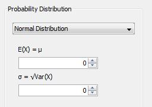

java.awt.Component
java.awt.Container
javax.swing.JComponent
javax.swing.JPanel
de.uni.bamberg.wiai.minf.forflow.datagenerator.view.DistributionPanel
java.awt.Component
java.awt.Container
javax.swing.JComponent
javax.swing.JPanel
de.uni.bamberg.wiai.minf.forflow.datagenerator.view.DistributionPanel
|
||||||||||
| PREV CLASS NEXT CLASS | FRAMES NO FRAMES | |||||||||
| SUMMARY: NESTED | FIELD | CONSTR | METHOD | DETAIL: FIELD | CONSTR | METHOD | |||||||||
java.lang.Object
public class DistributionPanel
This class gathers not only the probability distribution available to the system but also the parameters of those in a separate panel. If you select an available probability distribution at the same time its corresponding parameter panel changes, too. The parameter panel holds parameters like the Expectation and Variance to change those settings via the UI.
Note, the probability distributions notify about its creation with an update. Make sure you pass it down here along with its parameter panel. Example The following image shows an probability distribution and its parameter panel. 
| Nested Class Summary |
|---|
| Nested classes/interfaces inherited from class javax.swing.JPanel |
|---|
javax.swing.JPanel.AccessibleJPanel |
| Nested classes/interfaces inherited from class javax.swing.JComponent |
|---|
javax.swing.JComponent.AccessibleJComponent |
| Nested classes/interfaces inherited from class java.awt.Container |
|---|
java.awt.Container.AccessibleAWTContainer |
| Nested classes/interfaces inherited from class java.awt.Component |
|---|
java.awt.Component.AccessibleAWTComponent, java.awt.Component.BaselineResizeBehavior, java.awt.Component.BltBufferStrategy, java.awt.Component.FlipBufferStrategy |
| Field Summary |
|---|
| Fields inherited from class javax.swing.JComponent |
|---|
accessibleContext, listenerList, TOOL_TIP_TEXT_KEY, ui, UNDEFINED_CONDITION, WHEN_ANCESTOR_OF_FOCUSED_COMPONENT, WHEN_FOCUSED, WHEN_IN_FOCUSED_WINDOW |
| Fields inherited from class java.awt.Component |
|---|
BOTTOM_ALIGNMENT, CENTER_ALIGNMENT, LEFT_ALIGNMENT, RIGHT_ALIGNMENT, TOP_ALIGNMENT |
| Fields inherited from interface java.awt.image.ImageObserver |
|---|
ABORT, ALLBITS, ERROR, FRAMEBITS, HEIGHT, PROPERTIES, SOMEBITS, WIDTH |
| Constructor Summary | |
|---|---|
DistributionPanel()
default constructor. |
|
DistributionPanel(DataGeneratorView view)
constructor is passed the main view. |
|
| Method Summary | |
|---|---|
void |
accept()
this method accepts the current settings and passes it on to the view, which itself passes it to the table to store it in the selected facet. |
protected void |
addProbability(ProbabilityDistribution distribution,
DistributionParameterPanel parameterPanel)
Probability distributions which cause an update are handed down here, if an add update is invoked. |
protected void |
removeProbability(ProbabilityDistribution distribution)
Probability distributions can also send an update about removing it from the UI list. |
protected void |
setDataGeneratorView(DataGeneratorView view)
sets the highly needed reference manually. |
protected void |
updateAndSetValues(ProbabilityDistribution dist,
boolean updateGraph)
Whenever an change occurs on panels below of this we get an update and pass it on to the view. |
protected void |
updateWithoutSettingValues(ProbabilityDistribution dist)
this method is usually called, when any distribution has been set earlier and the same row & column are selected again. |
protected void |
useFirstInBox()
if no probability distribution has been chosen yet, we take the first in the combo box as the default selection strategy. |
protected void |
useValuesAlreadySet(ProbabilityDistribution dist)
this method uses the values of the last time when the tester had made his/her choices. |
| Methods inherited from class javax.swing.JPanel |
|---|
getAccessibleContext, getUI, getUIClassID, paramString, setUI, updateUI |
| Methods inherited from class javax.swing.JComponent |
|---|
addAncestorListener, addNotify, addVetoableChangeListener, computeVisibleRect, contains, createToolTip, disable, enable, firePropertyChange, firePropertyChange, firePropertyChange, fireVetoableChange, getActionForKeyStroke, getActionMap, getAlignmentX, getAlignmentY, getAncestorListeners, getAutoscrolls, getBaseline, getBaselineResizeBehavior, getBorder, getBounds, getClientProperty, getComponentGraphics, getComponentPopupMenu, getConditionForKeyStroke, getDebugGraphicsOptions, getDefaultLocale, getFontMetrics, getGraphics, getHeight, getInheritsPopupMenu, getInputMap, getInputMap, getInputVerifier, getInsets, getInsets, getListeners, getLocation, getMaximumSize, getMinimumSize, getNextFocusableComponent, getPopupLocation, getPreferredSize, getRegisteredKeyStrokes, getRootPane, getSize, getToolTipLocation, getToolTipText, getToolTipText, getTopLevelAncestor, getTransferHandler, getVerifyInputWhenFocusTarget, getVetoableChangeListeners, getVisibleRect, getWidth, getX, getY, grabFocus, isDoubleBuffered, isLightweightComponent, isManagingFocus, isOpaque, isOptimizedDrawingEnabled, isPaintingForPrint, isPaintingTile, isRequestFocusEnabled, isValidateRoot, paint, paintBorder, paintChildren, paintComponent, paintImmediately, paintImmediately, print, printAll, printBorder, printChildren, printComponent, processComponentKeyEvent, processKeyBinding, processKeyEvent, processMouseEvent, processMouseMotionEvent, putClientProperty, registerKeyboardAction, registerKeyboardAction, removeAncestorListener, removeNotify, removeVetoableChangeListener, repaint, repaint, requestDefaultFocus, requestFocus, requestFocus, requestFocusInWindow, requestFocusInWindow, resetKeyboardActions, reshape, revalidate, scrollRectToVisible, setActionMap, setAlignmentX, setAlignmentY, setAutoscrolls, setBackground, setBorder, setComponentPopupMenu, setDebugGraphicsOptions, setDefaultLocale, setDoubleBuffered, setEnabled, setFocusTraversalKeys, setFont, setForeground, setInheritsPopupMenu, setInputMap, setInputVerifier, setMaximumSize, setMinimumSize, setNextFocusableComponent, setOpaque, setPreferredSize, setRequestFocusEnabled, setToolTipText, setTransferHandler, setUI, setVerifyInputWhenFocusTarget, setVisible, unregisterKeyboardAction, update |
| Methods inherited from class java.awt.Container |
|---|
add, add, add, add, add, addContainerListener, addImpl, addPropertyChangeListener, addPropertyChangeListener, applyComponentOrientation, areFocusTraversalKeysSet, countComponents, deliverEvent, doLayout, findComponentAt, findComponentAt, getComponent, getComponentAt, getComponentAt, getComponentCount, getComponents, getComponentZOrder, getContainerListeners, getFocusTraversalKeys, getFocusTraversalPolicy, getLayout, getMousePosition, insets, invalidate, isAncestorOf, isFocusCycleRoot, isFocusCycleRoot, isFocusTraversalPolicyProvider, isFocusTraversalPolicySet, layout, list, list, locate, minimumSize, paintComponents, preferredSize, printComponents, processContainerEvent, processEvent, remove, remove, removeAll, removeContainerListener, setComponentZOrder, setFocusCycleRoot, setFocusTraversalPolicy, setFocusTraversalPolicyProvider, setLayout, transferFocusBackward, transferFocusDownCycle, validate, validateTree |
| Methods inherited from class java.awt.Component |
|---|
action, add, addComponentListener, addFocusListener, addHierarchyBoundsListener, addHierarchyListener, addInputMethodListener, addKeyListener, addMouseListener, addMouseMotionListener, addMouseWheelListener, bounds, checkImage, checkImage, coalesceEvents, contains, createImage, createImage, createVolatileImage, createVolatileImage, disableEvents, dispatchEvent, enable, enableEvents, enableInputMethods, firePropertyChange, firePropertyChange, firePropertyChange, firePropertyChange, firePropertyChange, firePropertyChange, getBackground, getBounds, getColorModel, getComponentListeners, getComponentOrientation, getCursor, getDropTarget, getFocusCycleRootAncestor, getFocusListeners, getFocusTraversalKeysEnabled, getFont, getForeground, getGraphicsConfiguration, getHierarchyBoundsListeners, getHierarchyListeners, getIgnoreRepaint, getInputContext, getInputMethodListeners, getInputMethodRequests, getKeyListeners, getLocale, getLocation, getLocationOnScreen, getMouseListeners, getMouseMotionListeners, getMousePosition, getMouseWheelListeners, getName, getParent, getPeer, getPropertyChangeListeners, getPropertyChangeListeners, getSize, getToolkit, getTreeLock, gotFocus, handleEvent, hasFocus, hide, imageUpdate, inside, isBackgroundSet, isCursorSet, isDisplayable, isEnabled, isFocusable, isFocusOwner, isFocusTraversable, isFontSet, isForegroundSet, isLightweight, isMaximumSizeSet, isMinimumSizeSet, isPreferredSizeSet, isShowing, isValid, isVisible, keyDown, keyUp, list, list, list, location, lostFocus, mouseDown, mouseDrag, mouseEnter, mouseExit, mouseMove, mouseUp, move, nextFocus, paintAll, postEvent, prepareImage, prepareImage, processComponentEvent, processFocusEvent, processHierarchyBoundsEvent, processHierarchyEvent, processInputMethodEvent, processMouseWheelEvent, remove, removeComponentListener, removeFocusListener, removeHierarchyBoundsListener, removeHierarchyListener, removeInputMethodListener, removeKeyListener, removeMouseListener, removeMouseMotionListener, removeMouseWheelListener, removePropertyChangeListener, removePropertyChangeListener, repaint, repaint, repaint, resize, resize, setBounds, setBounds, setComponentOrientation, setCursor, setDropTarget, setFocusable, setFocusTraversalKeysEnabled, setIgnoreRepaint, setLocale, setLocation, setLocation, setName, setSize, setSize, show, show, size, toString, transferFocus, transferFocusUpCycle |
| Methods inherited from class java.lang.Object |
|---|
clone, equals, finalize, getClass, hashCode, notify, notifyAll, wait, wait, wait |
| Constructor Detail |
|---|
public DistributionPanel()
DataGeneratorView with the constructor
you've to make sure this is done manually by the
provided method.
public DistributionPanel(DataGeneratorView view)
| Method Detail |
|---|
@Action public void accept()
protected void setDataGeneratorView(DataGeneratorView view)
view - reference to main view
protected void addProbability(ProbabilityDistribution distribution,
DistributionParameterPanel parameterPanel)
distribution - that's the probability distribution to add to the list
of available distributions. Call this, when the update
is an add operation.parameterPanel - a panel for parameter settingsprotected void removeProbability(ProbabilityDistribution distribution)
distribution - a probability distribution which as send an remove
update.
protected void updateAndSetValues(ProbabilityDistribution dist,
boolean updateGraph)

dist - probability distribution which has had a change
in the data structure.updateGraph - indicates whether to update graph or notprotected void updateWithoutSettingValues(ProbabilityDistribution dist)
dist - probability distribution passed on to graphprotected void useValuesAlreadySet(ProbabilityDistribution dist)
dist - distribution used the last time by the user.protected void useFirstInBox()
|
||||||||||
| PREV CLASS NEXT CLASS | FRAMES NO FRAMES | |||||||||
| SUMMARY: NESTED | FIELD | CONSTR | METHOD | DETAIL: FIELD | CONSTR | METHOD | |||||||||